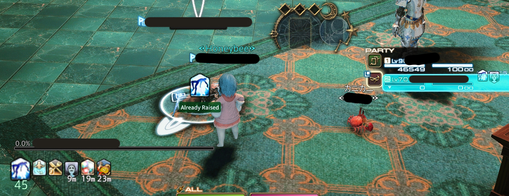
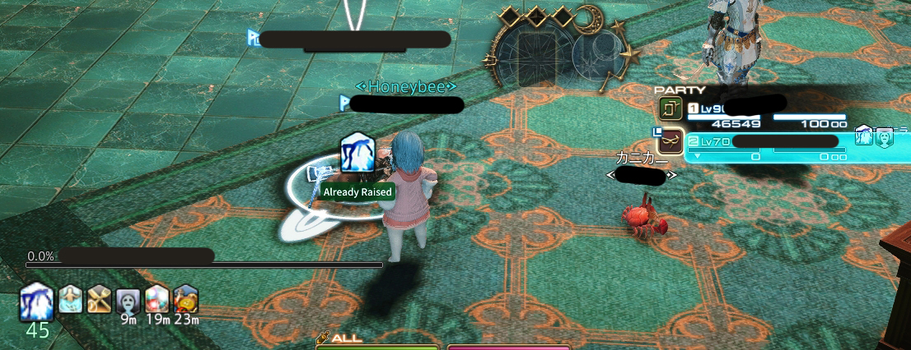

Chat Bubbles
顯示玩家說話時頭頂的泡泡，也可用於RP店分辨誰在說話，設定可隱藏自己的泡泡

BigPlayerDebuffs
讓自己的Debuff變超大

RezPls
能夠顯示地上屍體誰正在拉或已經被拉起
ChatCoordinates
輸入座標後會自動在地圖立旗與聊天欄輸出座標
/coord x座標 y座標 [地圖名稱] 地圖名稱可省略
顯示玩家說話時頭頂的泡泡，也可用於RP店分辨誰在說話，設定可隱藏自己的泡泡
讓自己的Debuff變超大
能夠顯示地上屍體誰正在拉或已經被拉起
輸入座標後會自動在地圖立旗與聊天欄輸出座標
/coord x座標 y座標 [地圖名稱] 地圖名稱可省略